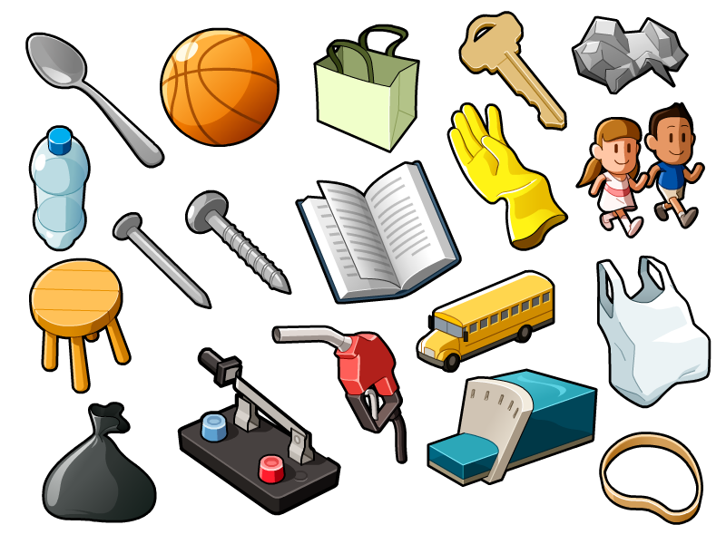

<!DOCTYPE html>
<html lang="en">
  <head>
    <meta charset="utf-8" />
    <meta name="viewport" content="width=device-width, initial-scale=1.0, maximum-scale=1.0, user-scalable=no" />

    <title>TDA y Clases</title>
    <link rel="stylesheet" href="./dist/reveal.css" />
    <link rel="stylesheet" href="./dist/theme/league.css" id="theme" />
    <link rel="stylesheet" href="./css/highlight/zenburn.css" />
    <link rel="stylesheet" href="./_assets/slides/css/filminas.css" />

  </head>
  <body>
    <div class="reveal">
      <div class="slides"><section  data-markdown><script type="text/template">
# TDA y POO</h1>
    
<small>Created by
    <a href="https://t.me/rmarku" target="_blank">
        <i class="fab fa-telegram-plane"></i>rmarku
    </a>
</small>

</script></section><section  data-markdown><script type="text/template">

### Introducción a la Programación Orientada a Objetos

Es un paradigma de programación que es muy cercano a como interactuamos y conocemos las cosas en la vida real.




</script></section><section  data-markdown><script type="text/template">

## ¿Qué es una clase?

* Una clase es una plantilla para saber como crear Objetos
* Una clase es un modelo que define un conjunto de **Atributos** (el estado) y **Métodos** para operar
con  el estado (el comportamiento)

</script></section><section  data-markdown><script type="text/template">

## ¿Qué es un objeto?
* Los objetos se crean a partir de las clases y se llaman **Instancias**
* Es una forma de abstraerse de los datos y sus operaciones y verlos como una **"caja negra"**

</script></section><section  data-markdown><script type="text/template">

## Clases y Objetos


</script></section><section  data-markdown><script type="text/template">

## Clases:
 
### Atributos o Variables miembros

* Son variables definidas dentro de la clase
* Pueden ser **privadas** o **publicas**
* Definen el estado del objeto
* Cada objeto tiene su propia instancia de los atributos

</script></section><section  data-markdown><script type="text/template">

## Clases:
 
### Atributos o Variables miembros


</script></section><section  data-markdown><script type="text/template">

## Clases: 
### Métodos o Funciones miembros
    
* Son funciones que residen dentro de la clase
* Pueden ser **privadas** o **publicas**
* Comúnmente operan con los atributos del objeto
* Permiten darle comportamiento al objeto

</script></section><section  data-markdown><script type="text/template">

## Clases: 
### Métodos o Funciones miembros
    

    
</script></section><section  data-markdown><script type="text/template">
## Objetos
    
* Son una instancia creada a partir de una clase.
* Poseen **Identidad**, lo que los diferencia de otros objetos
* Existe realmente en memoria.
* Cada uno tiene sus propios atributos y los métodos trabajan con estos atributos.

</script></section><section  data-markdown><script type="text/template">
## Objetos


</script></section><section  data-markdown><script type="text/template">
## Clases: Sintaxis

<pre><code class="hljs c++" data-trim contenteditable spellcheck="false">
class Punto {
//por omisión los miembros son 'private' para que sólo
//se puedan modificar desde la propia clase.
private:
        // Variable miembro privada
        int x;
        int y;
public:
        // Constructor
        Punto();
        // Destructor
        ~Punto();
        // Funciones miembro o métodos
        int ObtenerX();
        int ObtenerY();
};
</code></pre>


</script></section><section  data-markdown><script type="text/template">

## Métodos especiales
### Constructor

Son unos métodos especiales que se ejecutan automáticamente al crear un objeto del tipo de la clase.
 
En su declaración no se especifica el tipo de dato que devuelven, y poseen el mismo nombre que la clase a la que pertenecen.
Al igual que otros métodos, puede haber varios constructores sobrecargados.

</script></section><section  data-markdown><script type="text/template">

## Métodos especiales
### Constructor

Sus principales cometidos son:

* Inicializar los atributos del objeto a sus valores iniciales.

* Reservar recursos de memoria que hagan falta para el objeto.

</script></section><section  data-markdown><script type="text/template">

## Destructor

Los destructores son métodos especiales llamados automáticamente en la ejecución del programa, y por tanto
no tienen por qué ser llamadas explícitamente por el programador.

Es llamado solo cuando la instancia del objeto termina, o cuando se realiza un **delete** del objeto.

</script></section><section  data-markdown><script type="text/template">

## Destructor

Sus principales cometidos son:

* Liberar los recursos computacionales que el objeto de haya adquirido en tiempo de ejecución al expirar éste.

* Quitar los vínculos que pudiesen tener otros recursos u objetos con éste.

</script></section><section  data-markdown><script type="text/template">

## Archivo .h

<p>En el archivo .h se escribe el prototipo de la clase</p>
<pre><code class="hljs c++" data-trim contenteditable spellcheck="false">
class Punto {
private:
        int x;
        int y;
public:
        Punto();
        ~Punto();
        int ObtenerX();
        int ObtenerY();
};
        </code></pre>


</script></section><section  data-markdown><script type="text/template">

## Archivo .cpp

<p>En el archivo .cpp se escribe la implementación de los metodos</p>
<pre><code class="hljs c++" data-trim contenteditable spellcheck="false">
Punto::Punto(){
    x=0;
    y=0;
}
int Punto::ObtenerX(){
        return x;
}
int Punto::ObtenerY(){
        return y;
}
        </code></pre>


</script></section><section  data-markdown><script type="text/template">

## Palabra clave **this**

<p style="font-size: 0.8em;">
Hace referencia al propio objeto. Es utilizado para poder acceder a los atributos de la
    instancia del objeto al cual pertenece el método
</p>

Comúnmente puede ser obviado su uso, ya que llamando directamente al atributo también podemos acceder

<pre><code class="hljs c++" data-trim contenteditable spellcheck="false">
int Punto::EscribirY(int val){
        y = val; // no hace falta utilizar this
}
int Punto::EscribirX(int x){
        this->x = x;
// Como x ahora es una variable dentro de la función, para acceder al atributo
// utilizo el puntero this
}
</code></pre>


</script></section><section  data-markdown><script type="text/template">

### Diagrama de clase (UML)

Es un diagrama utilizado para mostrar rapidamente que posee una clase
<table style="
  border-collapse: collapse;border: solid 4px; border-radius:4px; font-size: 0.8em">
        <thead>
        <tr><th>Nombre de Clase</th></tr>
        </thead>
        <tbody>
        <tr><td style="border:none;border-top: solid 4px">-atributo1: tipo</td></tr>
        <tr><td style="border:none;">+atributo2: tipo</td></tr>
        <tr><td style="border:none">+atributo3: tipo</td></tr>
        <tr><td style="border:none;border-top: solid 4px">-metodo1(param: tipo):tipo retorno</td></tr>
        <tr><td style="border:none">-metodo2(param: tipo):tipo retorno</td></tr>
        <tr><td style="border:none">+metodo3(param: tipo):tipo retorno</td></tr>
        <tr><td style="border:none">+metodo4(param: tipo):tipo retorno</td></tr>
        </tbody>
    </table>


</script></section><section  data-markdown><script type="text/template">
# A programar
</script></section></div>
    </div>

    <script src="./dist/reveal.js"></script>

    <script src="./plugin/markdown/markdown.js"></script>
    <script src="./plugin/highlight/highlight.js"></script>
    <script src="./plugin/zoom/zoom.js"></script>
    <script src="./plugin/notes/notes.js"></script>
    <script src="./plugin/math/math.js"></script>
    <script>
      function extend() {
        var target = {};
        for (var i = 0; i < arguments.length; i++) {
          var source = arguments[i];
          for (var key in source) {
            if (source.hasOwnProperty(key)) {
              target[key] = source[key];
            }
          }
        }
        return target;
      }

      // default options to init reveal.js
      var defaultOptions = {
        controls: true,
        progress: true,
        history: true,
        center: true,
        transition: 'default', // none/fade/slide/convex/concave/zoom
        plugins: [
          RevealMarkdown,
          RevealHighlight,
          RevealZoom,
          RevealNotes,
          RevealMath
        ]
      };

      // options from URL query string
      var queryOptions = Reveal().getQueryHash() || {};

      var options = extend(defaultOptions, {"controls":true,"progress":true,"slideNumber":true}, queryOptions);
    </script>

    <script src="./_assets/slides/js/pruebas.js"></script>
    <script src="./_assets/slides/js/init.js"></script>

    <script>
      Reveal.initialize(options);
    </script>
  </body>
</html>
